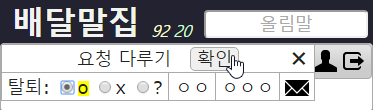

들어가기 ⇧
웹브라우저 주소 창에 maljib.org를 넣고 Enter 글쇠를 누릅니다.(웹브라우저는 크롬이 좋습니다.)
가입 ― 아이디 만들기 ⇧
1. 들어가기 그림을 누릅니다. 2. 아이디(이곳에서 부르는 이름), 이름(실명), 전자우편 주소, 보증인 아이디를 넣고 [확인]을 누릅니다. 3. 조금 기다리면 알림 글이 나옵니다. 그것을 읽고 눌러 닫습니다. 4. 전자우편을 열고 확인을 누릅니다. 5. 비밀번호를 두 번 넣고 [확인]을 누릅니다. 6. 주소 확인 전자우편을 지우고, ㅁㅁ님이 보증할 때까지 기다립니다. 7. ㅁㅁ님이 보증 요청 전자우편을 받았습니다.
7. ㅁㅁ님이 보증 요청 전자우편을 받았습니다.
 8. ㅁㅁ님이 아이디와 비밀번호를 넣고 들어옵니다.
9. ㅁㅁ님이 ㅇㅇ님을 보증합니다.
8. ㅁㅁ님이 아이디와 비밀번호를 넣고 들어옵니다.
9. ㅁㅁ님이 ㅇㅇ님을 보증합니다.(이때 ㅇㅇ님에게 물을 일이 있으면 봉투 그림을 누릅니다.) 10. 전자우편을 받고 ㅁㅁ님이 보증한 것을 알았습니다. 11. 아이디와 비밀번호를 넣고 [확인]을 누릅니다.
사용자 정보 바꾸기 ⇧
1. 사용자 그림을 누릅니다. 2. 사용자 정보 바꾸어 넣고 [확인]을 누릅니다.아이디, 이름, 전자우편 주소, 보증인 아이디, 모두 바꿀 수 있고, 탈퇴할 수도 있습니다.
둘러보기 ⇧
1. '배달말집' 큰 글씨를 눌러 사용자 모두 보기를 열었습니다.아이디와 이름과 보증인 아이디가 이름 차례로 보입니다. 2. 보증인 아이디 칸을 누르니까 보이는 차례가 바뀌었습니다.
이제 보증인이 같은 모둠끼리 한곳에 보입니다. 3. 아이디 오른쪽 작은 네모를 눌러 전자우편 받을 사람을 표시합니다.
'모두' 옆 네모를 누르면 받을 사람이 모두가 됩니다.
그런 다음에 봉투 그림을 누릅니다. 4. 제목과 알리는 글을 적고 [보내기]를 눌러 전자우편을 보냅니다.
파일을 보내려면 탐색기에서 파일을 끌어 편지 글에 놓습니다.
받을 사람을 바꾸려면 보내기 전에 제목 윗줄을 눌러 당깁니다. 5. 봉투 그림을 다시 누르면 글쓰기 창이 제자리로 돌아갑니다. 6. 오른쪽 위 X를 눌러 사용자 모두 보기 창을 닫습니다. 7. 노란 숫자는 등록된 올림말 개수입니다.
그것을 눌러 올린이와 올린 개수를 봅니다. 8. '한실' 칸을 눌러 한실 님이 올린 말들을 봅니다. 9. 그 가운데서 '명상'을 눌렀습니다. 10. 올림말 '명상'이 열렸습니다.
"'마음닦기'로 가보시오"가 보입니다. 그것을 누릅니다. 11. '마음닦기'가 열렸습니다.
손질한 자취가 하나 있습니다. [자취]를 누릅니다. 12. '마음버릇래도'를 '마음버릇대로'로 바루셨군요.
새 올림말 넣기 ⇧
1. 새 올림말 '별빛'을 올림말 칸에 넣고 Enter 글쇠를 누릅니다. 2. 씨가름 가운데 이름씨를 찾아 눌렀습니다. 3. 풀이를 써넣고 갈무리를 찾아 누릅니다. 4. 갈무리되었습니다. 노란 꼭지를 누릅니다. 5. 잘 되었습니다.탈퇴 ― 아이디 없애기 ⇧
1. 사용자 그림을 누릅니다. 2. 누구의 보증인도 아닐 때 탈퇴할 수 있습니다.ㅇㅇ님이 탈퇴하려면 보증인을 바꾸어야 합니다. 3. 보증인을 ㅁㅁ님으로 바꾸고 [확인]을 눌렀습니다. 4. ㅁㅁ님이 보증할 때까지 기다립니다. 5. ㅁㅁ님이 보증했습니다. 6. 이제 탈퇴할 수 있습니다. 탈퇴를 누릅니다. 7. [확인]을 누릅니다. 8. ㅁㅁ님이 승낙할 때까지 기다립니다. 9. ㅁㅁ님이 ㅇㅇ님 탈퇴 바람을 알았습니다. 10. ㅁㅁ님이 ㅇㅇ님 탈퇴를 받아줍니다.  11. 이제 ㅇㅇ님 글은 모두 ㅁㅁ님 것이 되었고, ㅇㅇ 아이디는 없습니다.
아이디를 잊었을 때 ⇧
1. 아이디 넣을 곳에 전자우편 주소를 넣습니다. 2. 비밀번호를 넣고 [확인]을 누릅니다.비밀번호를 잊었을 때 ⇧
1. 아이디를 넣고, 비밀번호 칸을 누르고, 비밀번호 바꾸기를 누릅니다. 2. 조금 기다리면 알림 글이 나옵니다. 그것을 읽고 눌러 닫습니다. 3. 받은 전자우편에서 확인을 누릅니다.
4. 새 비밀번호를 두 번 넣고 [확인]을 누릅니다.
5. 확인을 누른 전자우편을 지웁니다.
3. 받은 전자우편에서 확인을 누릅니다.
4. 새 비밀번호를 두 번 넣고 [확인]을 누릅니다.
5. 확인을 누른 전자우편을 지웁니다.전자우편을 못 받을 때 ⇧
1. 아이디를 넣고 [확인]을 누릅니다. 2. (?)를 누릅니다. 3. 전자우편 주소와 전화번호을 넣고 [확인]을 누릅니다. 4. 글틀 관리자의 알림을 기다립니다. 5. 알림이 왔습니다. 6. 전자우편 주소를 고쳐 넣고 [확인]을 누릅니다.이때 탈퇴를 누르면 ㅇㅇ 아이디가 없어집니다.